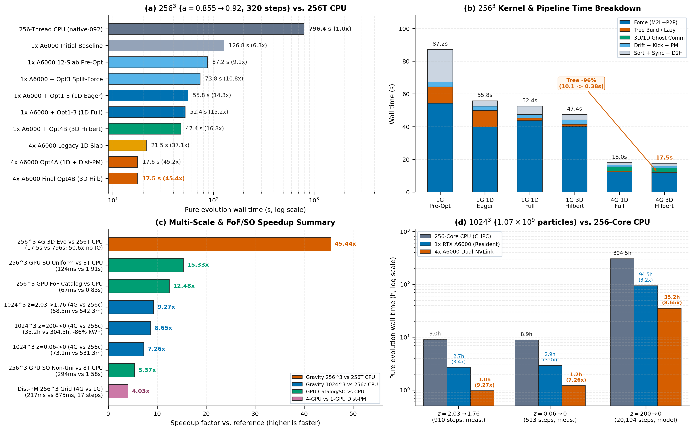

100% 显存常驻的多卡 CUDA TreePM 与全 GPU FoF 宇宙学引力求解器（原名 grav-gpu），面向 4 × RTX A6000（NVLink）与 1024³ 十亿粒子级演化，正推进高精度与多物理广度扩展。

| 配置阶段 | 演化耗时 | 相对 256T CPU | 建树耗时 | Pδ(k) 最大偏差 |
|---|---|---|---|---|
| 256 线程 CPU SWIFT (native-092) | 796.4 s | 1.0× | — | 基准 |
| 1× A6000 初始基线 | 126.8 s | 6.3× | — | 0.0006% |
| 1× A6000 12-Slab 预优化 | 87.2 s | 9.1× | 10.09 s | — |
| 1× A6000 + Opt1–3 (1D Full) | 52.4 s | 15.2× | 1.60 s | — |
| 1× A6000 + Opt4B (3D Hilbert) | 47.4 s | 16.8× | 1.30 s | — |
| 4× A6000 3D Hilbert Eager | 19.1 s | 41.8× | 1.82 s | 0.0011% |
| 4× A6000 最终 Opt4B (3D Hilbert Full) | 17.5 s | 45.4× | 0.38 s | 0.0387% |
| 测试项目 | 演化耗时 / 步数 | 能量守恒残差 | 动量漂移 | 功率谱 / 暗晕核对 |
|---|---|---|---|---|
| 256³ 全宇宙 z=200→0（4× A6000 3D） | 526.6 s · 9,257 步 | 0.0307%（L-I） | 3.72 × 10⁻⁵ | Pδ 0.123% · N≥10k: 89/89 |
| 256³ 晚期 0054→0056（4× A6000 Eager） | 47.3 s · 914 步 | 0.0159%（L-I） | 2.34 × 10⁻⁵ | Pδ 0.066% · N≥300: 1944/1944 |
| 32K 孤立 Plummer 平衡球（t=0→4.0） | 2.59 s · 33 检测点 | 1.15 × 10⁻⁵（|ΔE/E₀|） | 6.38 × 10⁻⁶ | 维里比 2T/|U| = 0.996–0.999 |
| 64³ Zel'dovich 平面波塌缩（EdS, a=0.02→0.50） | 6.71 s · 513 步 | Δx/L = 4.41 × 10⁻⁴ | Δv/v_pk = 0.592% | 切向伪速度 0.070 km/s |
| 周期性 Ewald 精确力 θ 扫描（64³, 4096 粒子） | θ = 0.9 → 0.3 | 短程 8.48e-3 → 1.14e-4 | 总力 1.98e-3 @θ=0.7 | 总力 1.03e-3 @θ=0.3 (PM 底) |
| 4-GPU 3D vs 1-GPU 1D 第 0 步力场 | 16.78M 粒子 | 势能中位 8.88 × 10⁻⁶ | 边界面 1.15 × 10⁻⁴ | 力中位 1.03 × 10⁻⁴ |
| 程序与硬件配置 | 总耗时 / 演化 | GPU 实测功耗 / 能耗 | 整机建模能耗 | Pδ(k) 偏差 · HMF |
|---|---|---|---|---|
| PKDGRAV3 3.5.1（1× A6000 · GPU FMM） | 2043.2 s / 1926.3 s | 67.9 W · 38.57 Wh | 106.68 Wh | 0.150% · 91/92, 17/17 |
| PKDGRAV3 3.5.1（2× A6000 MPI） | 1333.2 s / 1223.6 s | 136.2 W · 50.45 Wh | 94.89 Wh | 0.150% · 91/92, 17/17 |
| GADGET-4（128 核 EPYC · TreePM） | 883.2 s / 857.7 s | — | 110.70 Wh (700W: 171.7 Wh) | 0.187% · 92/92, 17/17 |
| CPU SWIFT（256 线程 EPYC 基线） | 816.0 s / 796.4 s | — | 136.16 Wh (700W: 158.7 Wh) | 基准 · 92, 17 |
| gravityCU 1× A6000（3D Hilbert Lazy） | 58.09 s / 50.03 s | 241.3 W · 3.93 Wh | 5.86 Wh (省 23.2×) | 0.0387% · 92/92, 17/17 |
| gravityCU 2× A6000（3D Hilbert Lazy） | 33.11 s / 28.66 s | 448.1 W · 4.17 Wh | 5.27 Wh (省 25.8×) | 0.0387% · 92/92, 17/17 |
| gravityCU 4× A6000（3D Hilbert Eager） | 30.21 s / 21.07 s | 635.2 W · 5.38 Wh | 6.39 Wh (省 21.3×) | 0.00106% · 92/92, 17/17 |
| gravityCU 4× A6000（3D Hilbert Lazy） | 28.26 s / 18.99 s | 662.7 W · 5.25 Wh | 6.19 Wh (省 22.0–25.6×) | 0.0387% · 92/92, 17/17 |
注：同台 a9 节点（2× EPYC 9754 + RTX A6000）、相同精度参数（θ=0.70、η_G=0.025 / PKDGRAV3 dEta=0.2236）。GPU 能耗由 200 ms NVML 硬件轮询积分；节点未开放非特权 RAPL 读数，CPU 与主机开销分别按利用率缩放与 700 W 双路参考透明建模。PKDGRAV3 在 256³ 下受主机端 67 次域分解（279–426 s）与 245 次建树（146–522 s）主导，平均 GPU 利用率仅 3–6%。
make standalone test-domain3d && make test-fof make engine smoke KERNEL_BUILD_DIR=/path/to/swiftsim python3 scripts/make_opt_comparison_figures.py && python3 scripts/make_code_energy_figure.py